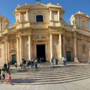
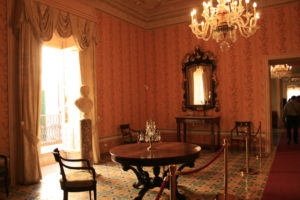
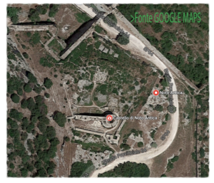

VAL DI NOTO
capitale del barocco
L’11 gennaio 1693 è la data che segna una ferita profonda nella val di Noto Sicilia, venne distrutta da un devastante terremoto insieme alle città di Catania, Siracusa e Ragusa ed i paesi di Modica, Militello, Scicli, Acireale, furono letteralmente rase al suolo. Si occupò della ricostruzione Giuseppe Lanza duca di Camastra (rappresentante del il Vicere spagnolo) che ricostruì la città di Noto in un altro sito 8 km più a valle, sul declivio del monte Meti, intervenne l’ingegnere militare olandese Carlos de Grunenbergh e numerosi architetti Rosario Gagliardi, Paolo Labisi, Vincenzo Sinatra, Antonio Mazza, capimastri e scalpellini, che, durante tutto il XVIII secolo, realizzano questo eccezionale ambiente urbanistico con la tipica impronta barocca.

Il barocco sta ad indicare tout court un movimento e una stagione culturale nata a Roma, con gusto artistico che mette l’accento su estrosità e fantasia quasi bizzarra, un linguaggio classico che ha come punto di riferimento gli artisti Bernini, Borromini.
Troviamo la massima espressione del barocco nella Cattedrale di Noto di San Nicolò, riaperta al pubblico da recente dopo che il terremoto del 1996 l’aveva gravemente danneggiata.

E’ possibile visitare uno dei più eleganti palazzi della Sicilia tutto in stile barocco, dei nobili Nicolai di Villadorata, colpiscono le imponenti balconate arricchite da mensoloni raffiguranti leoni, bambini, centauri, cavalli e sirene. Rimarrete stupiti dalle eleganti sale dei palazzi della nobiltà dei primi del 700. Altri importanti palazzi di nobili siciliani sono: Palazzo Modica di San Giovanni, Palazzo Landolina di Sant’Alfano, Palazzo Trigona di Cannicarao, Palazzo del Vescovado, Palazzo Impellizzeri di San Giacomo.

Noto Antica: è l’area della val di Noto Sicilia, dove si trovano le rovine della cittadina rasa al suolo dal terribile terremoto del 1693, si trova a circa 9 km a nord dal nuovo centro abitato, sul monte Alveria. val di notoAttualmente a causa di una carente cartellonistica è difficile da raggiungere e scarsamente valorizzato per mancanza di infrastrutture.
The January 11, 1693 is the date that marks a deep wound in the Val di Noto Sicily, was destroyed by a devastating earthquake along with the city of Catania, Siracusa and Ragusa and the towns of Modica, Militello, Scicli, Acireale, they were literally burned to the soil. Take charge of the reconstruction Giuseppe Lanza Duke of Camastra (representative of the Spanish viceroy) and who rebuilt the city of Noto in another site 8 km downstream, the upstream slope of the Meti, intervened Dutch military engineer Carlos de Grunenbergh and numerous architect Rosario Gagliardi , Paul Labisi, Vincenzo Sinatra, Antonio Mazza, master builders and masons, who, during the eighteenth century, realize this unique urban environment with the typical Baroque style. The Baroque Noto Sicilie indicates outright a movement and a cultural season born in Rome, with artistic taste which puts the emphasis on flair and imagination almost bizarre, a classic language that has as its reference point the artists Bernini, Borromini. We find the best expression of the baroque in Noto Cathedral of St. Nicholas, recently reopened to the public after the earthquake of 1996 had severely damaged.
Noto Italy, Noto Sicily